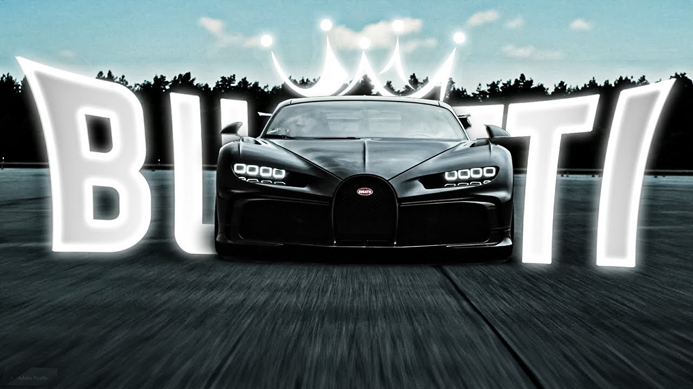

Automobiles Ettore Bugatti was a French manufacturer of high-performance automobiles. The company was founded in 1909 in the then-German city of Molsheim, Alsace, by the Italian-born industrial designer Ettore Bugatti. The cars were known for their design beauty and numerous race victories. Famous Bugatti automobiles include the Type 35 Grand Prix cars, the Type 41 "Royale", the Type 57 "Atlantic" and the Type 55 sports car. The death of Ettore Bugatti in 1947 proved to be a severe blow to the marque, and the death of his son Jean in 1939 meant that there was no successor to lead the factory. With no more than about 8,000 cars made, the company struggled financially, and it released one last model in the 1950s before eventually being purchased for its airplane parts business in 1963. In 1987, an Italian entrepreneur bought the brand name and revived it as Bugatti Automobili S.p.A.[2] A film about the founding of Bugatti is being produced by Andrea Iervolino.[3]
Support@bugatti.store
Our Customer Care team is on hand to answer any questions you may have. Contact us at support@bugatti.store and we will
get back to you shortly. Choosing a selection results in a full page refresh. Discover the Official Bugatti Store: Shop
exclusive clothing, accessories, and technology.
Quick Answer:
Bugatti cars are among the most expensive in the world, with prices ranging from $1 million to nearly $50
million, depending on the model and edition.
🚗 Bugatti Car Prices (Recent Listings)
Here’s a breakdown of some Bugatti models currently available:
Model Price Seller
Used Bugatti Veyron Grand Sport $1,064,910 Alibaba B2B
Bugatti Divo Coupe (16-cylinder, 8.0L) $496,958,016 Alibaba B2B
New/Used Bugatti Sports Car $1,774,850 Alibaba B2B
Bugatti Divo Limited Edition $88,742,408 Alibaba B2B
Bugatti-branded SUV (Zunxiang Edition) $4,570,239 Alibaba B2B
Hot Wheels Bugatti Die-Cast (toy) ₹2,500 OLX
💡 Key Insights
Bugatti Veyron: One of the most iconic models, typically priced around $1–2 million depending on condition.
Bugatti Divo: A rare, limited-edition hypercar, with listings showing astronomical figures (some inflated in
marketplaces). Real-world values are closer to $5–6 million, but certain sellers list exaggerated amounts.
Bugatti SUV (concept/replica): Not an official Bugatti release, but some sellers market luxury SUVs under the Bugatti
name.
Collectibles: Even toy models like Hot Wheels Bugatti editions are popular, though priced modestly compared to the real
cars.

To help in making a car, consider the following steps:
Research and Plan: Understand the rules and regulations, and create a detailed list of parts and tasks needed for your
project.
Choose Your Design: Decide on the type of car you want to build, whether it's a restoration, performance-oriented, or
kit car.
Source Parts: Look for parts and materials, either sourcing new or used components. Ensure they meet local laws and
standards.
Budgeting: Estimate costs for parts, tools, and labor, and consider creating a budget to stay within limits.
Follow a Step-by-Step Guide: Utilize comprehensive guides that cover everything from design to assembly, including
engine, chassis, and bodywork.
Seek Professional Help: If needed, consult a mechanic for specialized tasks and to avoid costly mistakes.
These steps will help you navigate the process of building a car effectively.

To create a website, you can hire a professional web developer or agency that specializes in custom website design and
development, ensuring a tailored solution for your needs.
Options for Hiring a Web Developer
Custom Website Development:
Companies like Your Website Company offer tailored website creation services, focusing on high-performance and visually
appealing designs. They provide a comprehensive suite of services, including hosting, support, and custom plugins to
enhance functionality.
1
1 Source
Understanding Costs:
In South Africa, the cost of web design can vary significantly. A standard 5-page website typically ranges from R3,000
to R10,000, depending on features and complexity. Basic websites may start as low as R500, while more complex sites can
exceed R150,000. Factors affecting the price include the number of pages, whether you choose a template or custom
design, and any special features you may want to include.
1
1 Source
Choosing the Right Provider:
Look for web design companies that emphasize excellent client care, quick response times, and a strong portfolio. For
instance, Website Design offers a range of services, including CMS, HTML, and eCommerce solutions, and they pride
themselves on their communication and streamlined development process.